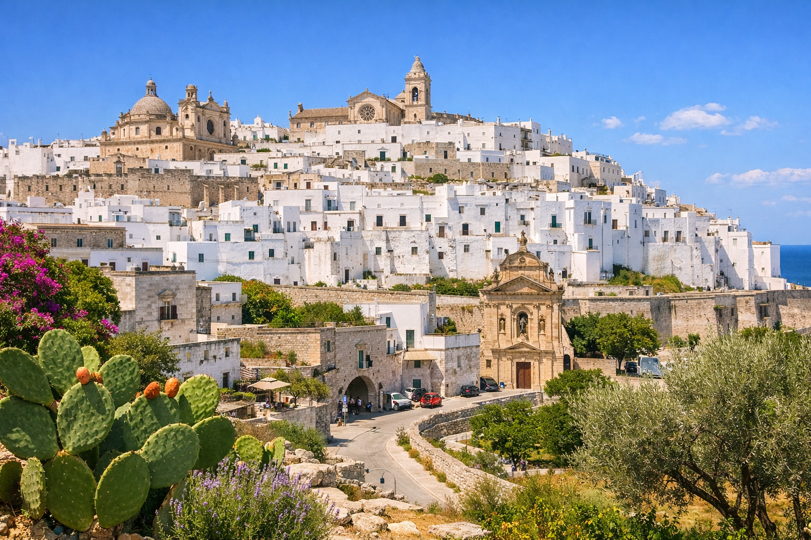
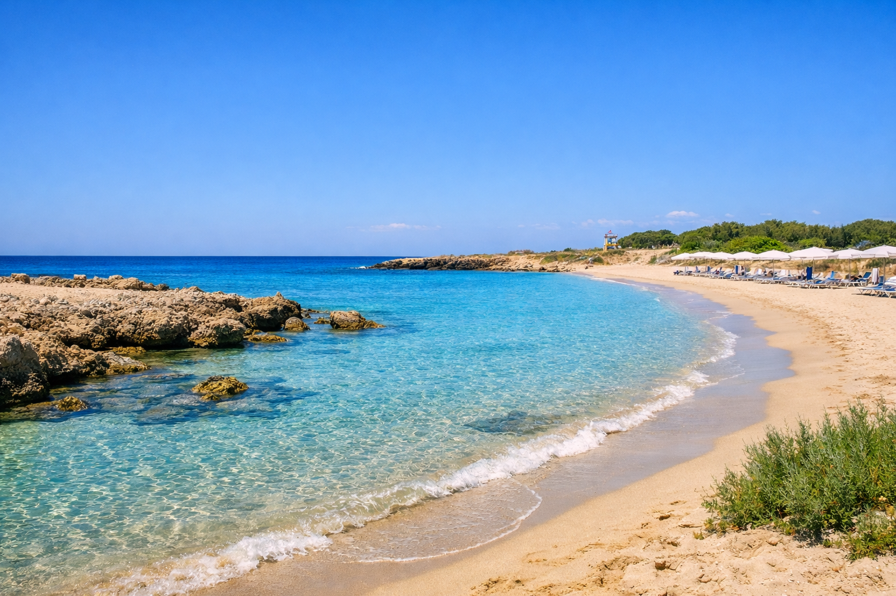
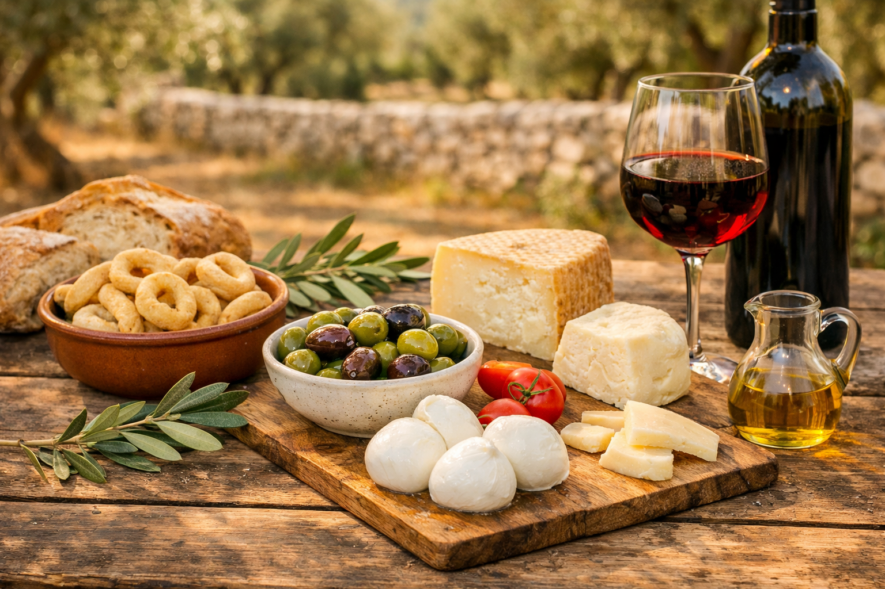

Discover Apulia’s landscapes, towns, and coastline.
Lamia Alvise is surrounded by the beauty of the Apulian countryside — a place where olive groves, whitewashed towns, and crystal‑clear beaches are all within easy reach.

Explore charming Apulian towns such as Ostuni, Cisternino, and Martina Franca. Wander through narrow alleys, admire whitewashed houses, and enjoy local cuisine in traditional trattorias.
The coastline offers sandy beaches, rocky coves, and crystal‑clear waters. Whether you prefer quiet natural spots or serviced beach clubs, the area has something for every taste.


Enjoy local experiences such as olive oil tastings, bike tours, cooking classes, and visits to historic masserie. Apulia offers a rich blend of culture, nature, and tradition.